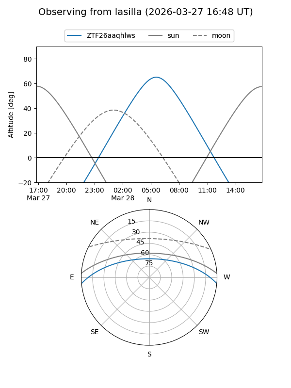
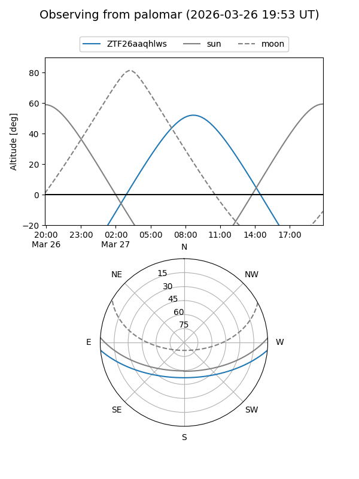

ZTF26aaqhlws
Target ZTF26aaqhlws at 2026-03-27 10:38
Aliases and brokers:
FINK: link
Lasair: link
ALeRCE: link
alt names
ZTF26aaqhlws (ztf,fink_ztf)
Coordinates:
equatorial (ra, dec) = 197.9774,-4.34930
equatorial (HMS+DMS) = 13:11:54.59,-04:20:57.49
galactic (l, b) = (312.6324,+58.13635)
Flags:
Photometry:
last ztfg=17.29
1 ztfg detections
Lightcurve
Visibility


Additional plots